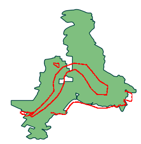

Exibe as patrulhas que correspondem aos filtros de consulta fornecidos. As opções de filtro incluem todos os atributos de patrulha (tipo, estação, equipe, etc.) e categorias e atributos do modelo de dados.
 |
Exemplo de resultado de consulta de patrulha |
Os resultados incluem um registro por perna de patrulha que corresponde aos filtros de consulta. Apenas atributos de patrulha são incluídos na página de resultados. Não há informações sobre observações ou incidentes incluídos.
Detalhes sobre as patrulhas são exibidos na janela tabular. As faixas de GPS de patrulha são exibidas na janela de mapeamento.